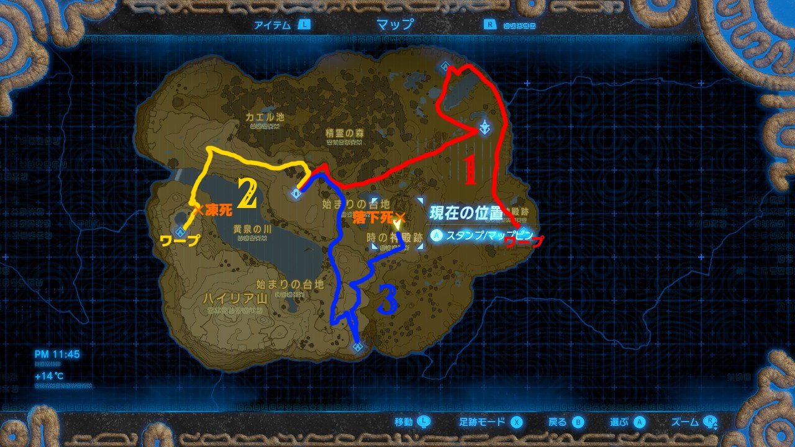

いかなるアイテムも入手しない(武器、素材、コログのミetc.)
回生の祠を出たら始まりの塔に直行して起動。その後、祠を好きな順番で攻略する。
ただしビタロックの前にバクダンを入手する必要あり。
寒冷地帯を移動するときは、ハートが1/2個以下になったら手動セーブする。ゲームオーバー後にリトライすればハートMAXでセーブ地点から再開される。
ワ・モダイの祠の、最後の球はビタロックとバクダンを使ってどける。マグネキャッチでハンマーを押し付けても可。
全ての祠を攻略したら、克服の証は消費せずに時の神殿に直行してパラセール入手。その後手動セーブする。
ダメージを受けている場合は、神殿から落下死して再開後(ハートMAX)に再度セーブする。
手動セーブのデータは再度手動セーブしない限りずっと残るので、ビンゴ中およびビンゴ後にセーブしなければ、ビンゴ用のデータを再度作る必要は無くなります。
翻訳：ふぁんとむ
大体以下のような感じで、ゲームオーバー2回でいけますが、
ワ・モダイから回生の祠にワープすれば1回で済みます。

ルート作成参考マップ